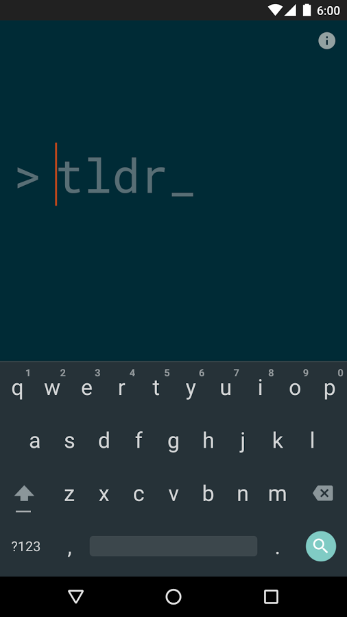
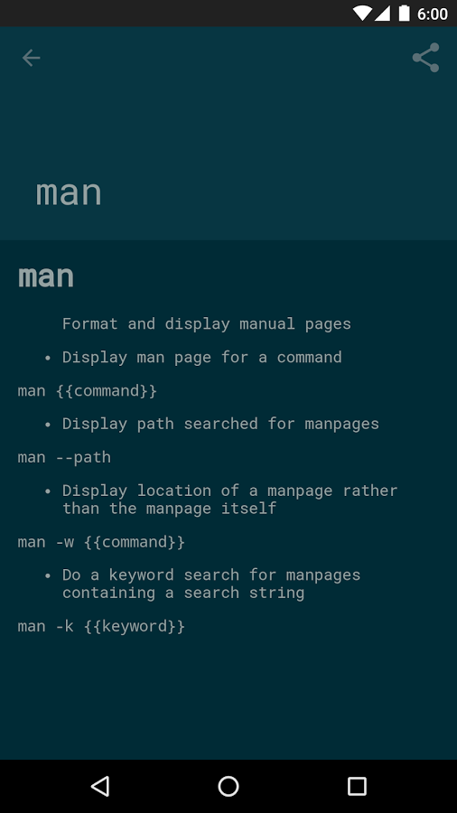

tldr 的安卓客户端
上次在 Cheat (tldr, bropages) - Unix命令用法备忘单 这篇博文中提到过 tldr ，它跟 cheatsheet 的功能一样：用来查询一些常用命令的惯用法，呈现形式是简明扼要的备忘单形式，而不是冗长的manpage．区别在于cheatsheet 是离线查询，在 tldr 是在线查询的（均指官方客户端，而第三方客户端不一定是这样），并且后者支持更多命令．
在Google Play上找到了 tldr 的两个Android客户端，由于在其它国内市场似乎没有，所以分享给大家．
tldroid

这个相对要好一些，数据是离线的，并且集成了一个小终端可以运行当前查到的命令（前提是你的系统有这些命令，并且是普通用户可以跑的）.
也有些小问题：
- 查找命令的时候，必须从它弹出的下拉列表里面选才能看到命令说明，如果直接回车这不行，即使你输入的命令明明在下拉列表里面有
- 不知道怎么更新pages数据 （不过它的确会在某些时候自动更新，在about界面可以看到最后更新时间和当前pages数量）


下载：
- Google Play：https://play.google.com/store/apps/details?id=io.github.hidroh.tldroid
- 本博客共享：http://files.cnblogs.com/files/bamanzi/tldroid-1.3.apk
tldr-viewer

这个的数据不是离线的，在打开的时候会刷新，总是需要等一会儿才能用（因为这里还有一个烦人的bug：它在刷新的时候你试图搜索的话，它会闪退）。
下载：
- Google Play：https://play.google.com/store/apps/details?id=de.gianasista.tldr_viewer
- 本博客共享： http://files.cnblogs.com/files/bamanzi/tldr-viewer-1.3.apk
附：tldr 的python离线客户端
tldr的官方python客户端是在线查询的，不过有个第三方的python客户端支持离线查询: https://github.com/lord63/tldr.py
因为依赖于PyYAML, click等包，所以建议用pip安装：pip install tldr.py --user （注意包名跟tldr官方python客户端的包名差了两个字母，后者叫做 tldr。但安装之后的可执行文件跟官方客户端重名，都叫做 ~/.local/bin/tldr，你两个都装的话需要将先安装的 ~/.local/bin/tldr` 改一下名再装后一个）．
使用之前还需要下载tldr-pages代码库作为离线数据包，并通过 tldr init 告知pages数据的位置：
$ cd ～
$ git clone http://github.com/tldr/tldr-pages.git .tldr-pages
$ tldr init
Input the tldr repo path(absolute path): (e.g. /home/lord63/code/tldr/)
Input your platform(linux, osx or sunos): (e.g. linux)
Initializing the config file at ~/.tldrrc...然后就可以用 tldr find {{command}} 查询了．
后续可以用 tldr update 刷新数据

昵称：
不改了 退出登录
[Ctrl+Enter快捷键提交]
【推荐】融云即时通讯云－豆果美食、Faceu等亿级APP都在用
【福利】你是我的好朋友，我要送你个天猫红包
· 跨界项目：基于Intel平台的Chromebook有望运行Windows软件
· 微软：升级Win10失败 免费送笔记本一台！
· 2016机器人世界杯：不容错过的精彩摔倒瞬间
· 微信Windows 10应用现身Windows商店
· 微软iOS应用迁移工具再进化：全新UIKit API
» 更多新闻...
· 编程的智慧
· 写给初学前端工程师的一封信
· 抽象：程序员必备的能力
· 编程同写作，写代码只是在码字